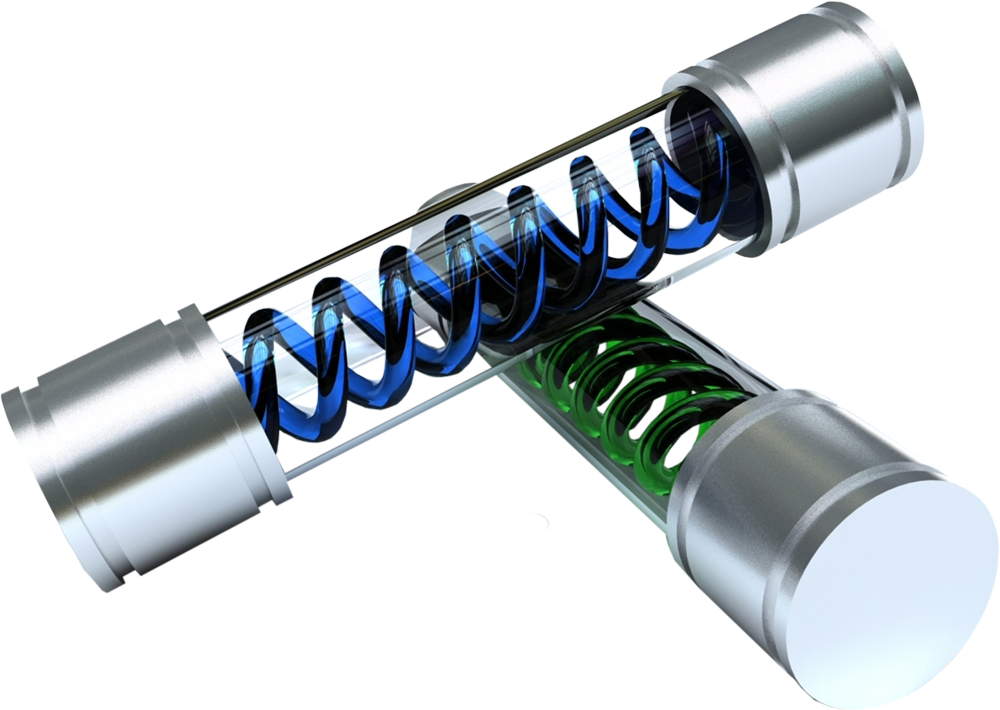
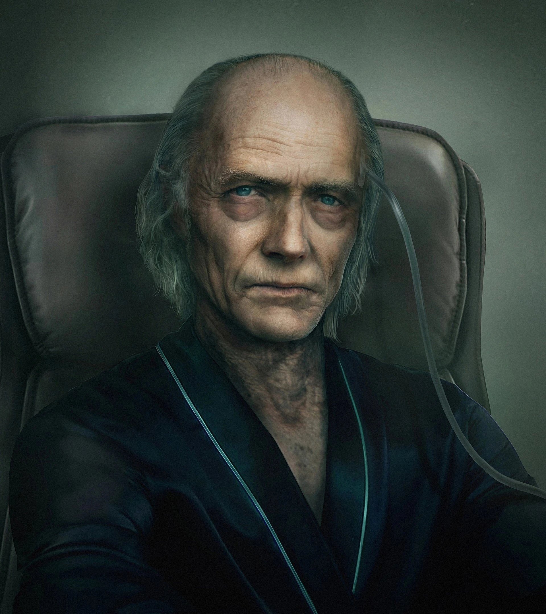
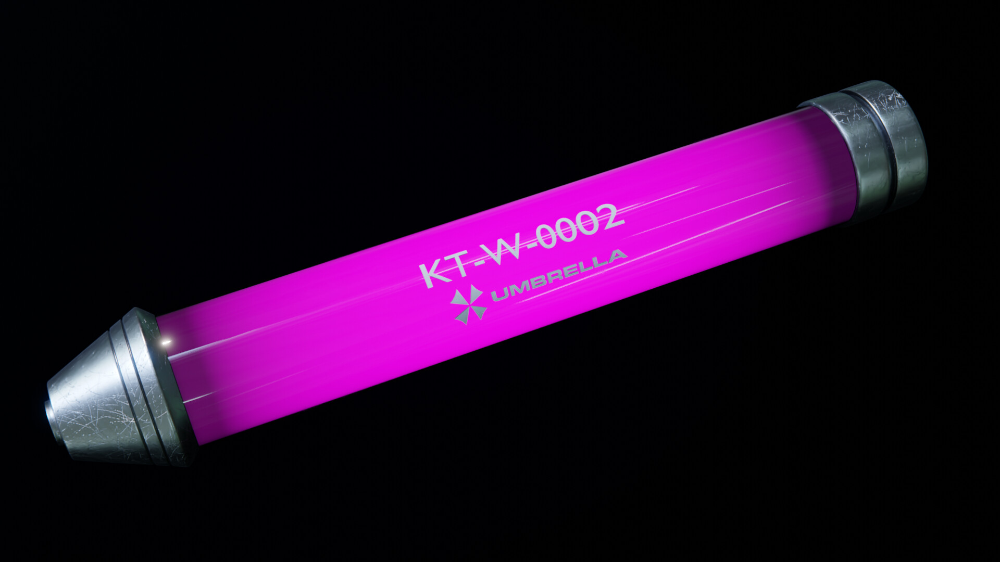

T-VIRUS (T-ウィルス)
|  |
Origem: Vírus criado da fusão do DNA de sanguessugas com o vírus Progenitor. Criado/descoberto em: 1977 Por: James Marcus (fundador e pesquisador da Umbrella) Cura/tratamento: Sim O T-Vírus (T-ウィルス) foi criado em 19 de setembro de 1977 por James Marcus a partir da combinação do Progenitor e o DNA de sanguessugas. O objetivo era a criação de um agente que pudesse gerar armas biológicas a partir de organismos infectados. O nome deriva de “Tyrant Series” (tirano), que seria também o nome da arma biológica perfeita, criada a partir do vírus. Em janeiro de 1978, Marcus aperfeiçoa o t-vírus e passa a temer que Spencer roube seus dados. Marcus utilizou alguns de seus alunos como cobaias para o t-Vírus, causando alvoroço entre os pesquisadores em Arklay. Muitos pediram que o Centro de Treinamento fosse fechado e que a pesquisa fosse retirada das mãos de Marcus.. |
|
Em experimentos com sanguessugas, Marcus induziu diversas modificações, desde fisiológicas e estruturais quanto comportamentais. Os resultados iniciais mostraram crescimento acelerado tanto no tamanho quanto no número. Logo, as sanguessugas tornaram violentas e apresentaram comportamento canibal. Com o tempo, os anelídeos abandonaram esse comportamento e passaram a se comportar como um conjunto, chegando ao ponto de imitar a forma de James Marcus. |
_____________________________________________________________________________________________________________________
SPENCER x MARCUS
|
Em 1978, sob as ordens de Oswell E. Spencer, o Centro de Treinamento onde Marcus desenvolvia sua pesquisa é fechado. Albert Wesker e William Birkin deixam de ser meros alunos e passam a pesquisadores chefes do Centro de Pesquisa em Arklay, comandando a pesquisa com o t-vírus para a produção de armas biológicas vivas. O primeiro passo que Birkin e Wesker deram foi procurar uma forma de fortalecer o t-vírus, a partir da observação de características do vírus Ebola. Descoberto na África, em 1976, o Ebola é um Filovírus e retrovírus que apresentava a peculiaridade de induzir mutações em genes de seres humanos, tornando-os semi-imortais*¹. Seguindo esse caminho, em 1981, Birkin e Wesker conseguiram aprimorar o t-vírus de forma que este produzisse zumbis. Devido à natureza de qualquer vírus e da imunidade de seus potenciais hospedeiros, era impossível obter uma taxa de 100% de infecção. Cerca de dez por cento dos seres humanos escapariam com sorte e não se transformariam em zumbis. Para cobrir esses 10% de seres naturalmente imunes ao t-vírus, era necessária a criação de armas que fossem capazes de eliminá-los. [*1 – Naturalmente, o Ebola não apresenta esta característica. Essa informação é ficcional]. |
 |
|
Em 1983, Wesker passou a observar a capacidade adaptativa do t-vírus e sua capacidade de infectar uma enorme gama de espécies. Os possíveis hospedeiros do vírus não se restringiam a mamíferos, mas também aves, peixes, insetos e até mesmo plantas. Essas observações deram origem a uma enorme quantidade de armas biológicas, como Cerberus, baseada em cães dobermann treinados; o Neptune baseado em tubarões brancos, Chimera, o produto da mistura de genes humanos e de mosca gerando um ser que era posteriormente infectado com o t-vírus; e Web Spinner, baseado em tarântulas. Em 1988, a pesquisa para criar uma arma biológica perfeita com capacidade de combate chegou ao seu ápice com a criação do Tyrant, que consistia da administração de uma grande quantidade de t-vírus em uma cobaia humana. Apesar do sucesso, o projeto possuía um inconveniente: o t-vírus destruía as células nervosas do hospedeiro, o que o tornava pouco susceptível a obedecer ordens. Pouquíssimos indivíduos adaptados seriam capazes de se transformar em Tyrants, o que tornava a obtenção de cobaias compatíveis extremamente difícil. Com a pesquisa paralisada devido a essa dificuldade, Wesker resolve recorrer a uma amostra de um parasita que havia sido desenvolvido nos laboratórios franceses da Umbrella. Posteriormente, esse evento levaria à descoberta do G-vírus por William Birkin. |
_____________________________________________________________________________________________________________________
ZUMBIS, CRIMSON HEADS e LICKERS
|
A infeção do t-vírus em humanos gera transformações progressivas na maioria dos hospedeiros. É observada perda de neurônios, redução da inteligência, comprometimento da pele e das células musculares e coagulação sanguínea. Todas as funções cerebrais não relacionadas ao sistema nervoso autônomo são perdidas, como as capacidades intelectuais superiores e processos cerebrais complexos. Os infectados apresentam uma fome constante para suprir um metabolismo celular acelerado. Essa fome constante induz um comportamento alimentar agressivo, fazendo com que o zumbi ataque outros seres não infectados, permitindo, desta forma, que o t-vírus se espalhe. A infecção pelo t-vírus também pode induzir outras alterações em humanos. Após sofrer um grande dano, o zumbi pode transformar-se em um Crimson Head. O organismo do infectado entra em um estado dormente e o hospedeiro passa por um processo denominado V-ACT, no qual o t-vírus é reativado a nível celular e promove modificações no sistema muscular e circulatório, gerando uma maior agressividade, com o crescimento de garras. O processo de V-ACT foi observado inicialmente em uma criatura apelidada de Crimson Head Protótipo 1, que foi mantida presa abaixo do cemitério do complexo de pesquisa em Arklay. |
|
Crimson Heads podem ser criados a partir da infecção por uma variante do t-vírus encontrada neste zumbi protótipo. Essa variante do vírus é, provavelmente, a responsável pelo desastre que ocorreu no complexo de pesquisa em Arklay. O t-vírus também pode induzir a formação de uma segunda criatura, o Licker. O metabolismo acelerado dos zumbis induz a uma fome incontrolável, que, nem sempre pode ser sanada. Quando um zumbi fica por longos períodos sem alimento, torna-se um Licker. Esta é criatura possui estrutura muscular é bastante desenvolvida, com aumento da língua e hipertrofia acentuada do cérebro, ao ponto de provocar a perda da visão do hospedeiro. A cegueira é totalmente compensada com uma melhor capacidade de audição. A estrutura muscular desenvolvida promove maior agilidade e saltos usados para atacar em conjunto com a língua e grandes garras nos membros anteriores. Como os Lickers só foram encontrados no complexo subterrâneo e na cidade de Racoon City (principalmente na RPD) é provável que sejam gerados por uma variante do t-vírus produzida no laboratório de William Birkin. |
_____________________________________________________________________________________________________________________
HUNTERS
 |
Hunters foram criados por William Birkin no complexo de pesquisa em Arklay, em 1981. Essas criaturas são o resultado da infusão de DNA de répteis em óvulos humanos fertilizados e infectados com o t-vírus. O Hunter foi criado com o objetivo de atacar humanos portando equipamentos de proteção em cenários de combate tradicional ou em guerras biológicas. Nesse caso, incialmente, o Hunter serviria para eliminar os seres humanos que possuíam imunidade natural contra o t-vírus e não se transformariam em zumbis. Como o nome já diz, o Hunter age como um caçador. Ele avista a presa e a ataca com grande agilidade, usando saltos com grande altura e suas garras. Além disso, o Hunter possui inteligência suficiente para obedecer a comandos simples. Desta forma, pode ser usado como uma arma biológica bastante eficiente e foi produzido em massa pela Umbrella, tendo inclusive, algumas variações criadas a partir do primeiro modelo, o Hunter Alfa. |
|
O Hunter beta, produzido a partir do Alfa, foi criado para uma linha de baixo custo. Possui um menor poder de ataque, mas é mais inteligente que o primeiro modelo e pode desviar de balas. O Hunter Gama é uma subespécie criada pela divisão europeia da Umbrella, que combinava genes humanos com um ovo fertilizado de anfíbios. Apesar de apresentar uma maior inteligência, esse modelo possuía o defeito de não poder permanecer muito tempo fora do ambiente aquático e não foi produzido em massa. O Hunter II, criado por uma empresa rival da Umbrella a partir de dados coletados por Wesker, é capaz de atacar alvos específicos e é altamente controlável. Possui uma subespécie, chamada de Sweeper, com garras venenosas. |
_____________________________________________________________________________________________________________________
TYRANT
|
Em julho de 1988, a pesquisa de armas biológicas chegou ao terceiro estágio, com a produção do Tyrant. Esta, era uma arma com capacidade de combate e altamente sofisticada – possuía inteligência e obedecia a ordens programadas, quase como um soldado. O primeiro Tyrant criado não foi considerado um sucesso, o chamado Proto Tyrant (T-001). A primeira cobaia recebeu a quantidade máxima possível de t-vírus. Como um dos efeitos do t é reduzir o número de células nervosas do hospedeiro, este primeiro Tyrant possuía pouca inteligência, e, portanto, não era capaz de obedecer ordens com eficiência. |
|
O Proto Tyrant possuía o coração e a medula espinhal expostos, o que eram pontos bastante fracos. Apesar desses defeitos físicos, o protótipo possuía a mesma agressividade e durabilidade do modelo final, além de uma estrutura física eficiente. Após o fim da URSS (entre o final dos anos 80 e início dos anos 90), um militar russo, Sergei Vladimir, se alia a Umbrella e torna-se o braço direito de Spencer, no comando de uma base da Umbrella na região do Cáucaso. O interesse de Spencer em Sergei era a sua compatibilidade perfeita com o T-vírus: o russo foi então clonado em série para a produção de Tyrants, corrigindo o problema da falta de cobaias compatíveis. O T-002, criado após as observações feitas com o protótipo, teve maior sucesso. Provavelmente foi desenvolvido no começo dos anos 90, após as contribuições de Sergei para a Umbrella. Este modelo apresenta a maior eficiência em combate e foi usado como base para a produção de outros Tyrants. Possui grande resistência e capacidade de combate avançada. Sua maior vantagem é a menor perda de células neuronais, o que o torna mais eficiente para seguir comandos. O modelo seguinte, T-103, foi desenvolvido a partir dos dados de combate obtidos com o T-002. Este modelo apresenta um maior metabolismo, o que proporciona uma maior capacidade de regenerativa. Seu aspecto mais humanoide permite que seja usado em invasões ou até mesmo como segurança. Com a descoberta da substância beta hetero aserotonina, a produção de modelos T-103 passou a ser feita em massa, já que o composto tornava qualquer ser humano compatível para gerar um Tyrant. Sob o comando de Vincent Goldman, na Ilha Sheena, um grande número de T-103 foi produzido. O T-103 foi posteriormente utilizado como base para dar origem a outros modelos de Tyrants, como o 0400TP (Tyrant R ou Reborn), 091, Thanatos, Ivan, Nemesis T-Type e T-A.L.O.S. |
|
Todos os Tyrants, exceto o protótipo, possuem o “modo” Super Tyrant. Essa função é ativada quando a B.O.W sofre danos excessivos ou a ou as vestes limitantes são removidas, o t-vírus promove alterações que tornam os Tyrants armas ainda mais agressivas. Há aumento em sua força e resistencia, além do surgimento de garras. O Super Tyrant possui, ainda, uma maior capacidade regenerativa, que, como no caso de Nemesis, pode ser incontrolável. |
_____________________________________________________________________________________________________________________
VACCINE
|
Douglas Rover, pesquisador do Hospital de Raccoon City, desenvolveu uma vacina que revertia os efeitos do t-vírus. Carlos Oliveira, membro da U.B.C.S, encontra as instruções para produção da vacina no Hospital e salva Jill Valentine após um ataque do Nemesis T-Type. No entanto, esta vacina não elimina completamente o vírus, e sim faz com que permaneça em um estado de latência, permitindo que o organismo infectado crie anticorpos que destroem o agente. Desta forma, Jill tornou-se totalmente imune ao t-vírus e seus anticorpos foram posteriormente usados por Wesker para finalizar Uroboros. Na Universidade de Raccoon City, dois pesquisadores, Greg Mueller e Peter Jenkins, desenvolveram um reagente chamado Daylight que inibia a multiplicação do t-vírus. A substância é sintetizada a partir de uma combinação de Base-P; Veneno-V, derivado de abelhas e Sangue-T, extraído de um hospedeiro do T-Vírus. Criado por Michael Jenkins, o AT1521 era um reagente, que assim como o Daylight, capaz de inibir a multiplicação do t-vírus, reduzindo o espalhamento da infecção entre a população. O “AT” não é capaz de eliminar o vírus do organismo e somente funciona se usado antes do infectado exibir os sintomas do vírus. A t-vacina foi desenvolvida por Frederich Downing, um ex-funcionário da Umbrella que passou a trabalhar para a WilPharma após o desastre em Raccoon City. Para aprimoramento da vacina foram realizados testes ilegais na Índia, mas esta só foi finalizada em 2005 em um instituto da WilPharma localizado em Harvardville. Teve sua eficiência exibida ao público após um incidente provocado por Downing em um aeroporto da cidade. |
 |
 ® Direitos Reservados
® Direitos Reservados